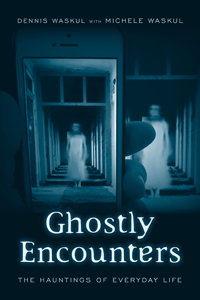

<html lang='en'><head>
<meta name='robots' content='noindex,nofollow' /><meta content="text/html; charset=utf-8"></meta><script> (function(i,s,o,g,r,a,m){i['GoogleAnalyticsObject']=r;i[r]=i[r]||function(){  (i[r].q=i[r].q||[]).push(arguments)},i[r].l=1*new Date();a=s.createElement(o),  m=s.getElementsByTagName(o)[0];a.async=1;a.src=g;m.parentNode.insertBefore(a,m)   })(window,document,'script','//www.google-analytics.com/analytics.js','ga');   ga('create', 'UA-43183130-1', 'temple.edu');   ga('send', 'pageview'); </script>
<title>Dennis Waskul with Michele Waskul: Ghostly Encounters - Print</TITLE>
<link rel="stylesheet" href="general.css" type="text/css"><SCRIPT LANGUAGE = JAVASCRIPT></SCRIPT>
<meta http-equiv="Content-Type" content="text/html; charset=utf-8">
</HEAD>
<BODY LINK="#3152A5" VLINK="#3152A5" ALINK=Gray BGCOLOR=White>
<CENTER><P CLASS=intro><br><p>
<i>How people experience ghosts and hauntings, the ways they make sense of uncanny experiences, and the consequences thereof</i>
<br><br><br></P></CENTER><br>&nbsp;
<!--none//--><Table width="100%" border=0 cellspacing=5><tr><td width="175" align="center"></td><td>
<h1 class="booktitle">Ghostly Encounters</h1>
<h1 CLASS=subtitle>The Hauntings of Everyday Life</h1>
<h3 class="author">Dennis Waskul with Michele Waskul</h3>

paper: $25.95, Jun 16<BR>EAN:&nbsp;978-1-4399-1289-8<BR>
<font color=#990033>Available</FONT><font size=-7><br>&nbsp;</font></p><p class="info">cloth: $59.50, Jun 16 <BR>EAN:&nbsp;978-1-4399-1288-1<BR>
  <font color=#990033>Available</FONT><font size=-7><br>&nbsp;</font></p><p class="info">e-book: $25.95, Jun 16 <BR>EAN:&nbsp;978-1-4399-1290-4<BR>
    <font color=#990033>Available</FONT><font size=-7><br>&nbsp;</font></p></p></td></tr></table>
<br> <p class="info">164 pp<BR> 5.5 x 8.25<BR> 17&nbsp;halftones<BR></P>  <p class="info"><font size=-7>&nbsp;</font></p><p class="info">
</P></td></tr></table><BR><BLOCKQUOTE>
	<p><i>"</i>Ghostly Encounters <i> examines the subject of the paranormal at length. The Waskuls' ethnographic methodology and their focus on the experiences of individuals are entirely unique within the literature. But what sets the book apart is the authors' willingness to describe and speculate about their personal supernatural experience, an aspect that draws the reader into the material and adds to the appeal for ghost enthusiasts."</i><br/>&#8212;<b>Christopher Bader</b>, Professor of Sociology at Chapman University and co-author of <i>Paranormal America: Ghost Encounters, UFO Sightings, Bigfoot Hunts, and Other Curiosities in Religion and Culture</i><br>
</BLOCKQUOTE>
<P><P>
<p>&quot;<i>In the top corner of the window a pale, milky-white wisp is rising almost to the top of our ten-foot ceiling.... I am startled but not afraid.... Mostly, I am engrossed; I have never seen anything like this before (or since) and it fascinates me.&quot;<br>
<p></i>Dennis Waskul writes these lines&#8212;about his first-hand experience with the supernatural&#8212;in the introduction to his beguiling book <i>Ghostly Encounters. </i>Based on two years of fieldwork and interviews with 71 midwestern Americans, the Waskuls' book is a reflexive ethnography that examines how people experience ghosts and hauntings in everyday life. The authors explore how uncanny happenings become ghosts, and the reasons people struggle with or against a will to believe. They present the variety and character of hauntings and ghostly encounters, outcomes of people telling haunted legends, and the nested consequences of ghostly experiences.<i>
<br /></i><b>
<br />
</b>Through these stories, <i>Ghostly Encounters</i> seeks to understand the persistence of uncanny experiences and beliefs in ghosts in an age of reason, science, education, and technology&#8212;as well as how those beliefs and experiences both reflect and serve important social and cultural functions.
<br />
<br>
<P CLASS="top"><A HREF="#top">BACK TO TOP</A></P></p>
<BR><H2 class="inpageheading">Excerpt</h2><P>Excerpt available at <a href="http://www.temple.edu/tempress">www.temple.edu/tempress</a></p>

<BR><H2 class="inpageheading">Reviews</h2><p>
<p>
<p>
<i>"The Waskuls' ethnographic and sociological approach makes a significant contribution to the existing literature. Their detailed methodology is particularly useful in connection with material that is often considered taboo or is stigmatized, trivialized, and sensationalized. The intriguing narrative and its focus on ghostly experiences that lurk outside the norms of religion and spirituality provide key insights. </i>Ghostly Encounters <i> should attract a wide audience."</i>
<br/>&#8212;<b>Jeannie Thomas, </b>Professor of English at Utah State University and co-author of <i>Haunting Experiences: Ghosts in Contemporary Folklore</i>
<br>
<p>
<i>"Dennis Waskul&#8212;an accomplished ethnographic researcher, a skilled writer, and a gifted sociologist&#8212;and co-author Michele Waskul take their readers on a journey through the social world of ghosts. </i>Ghostly Encounters<i> is a compelling book that relates the ways and means of interpreting everyday life among people who not only believe in ghosts but also have made ghosts a part of their very being. The authors are committed to capturing 'ghostly reason,' the emotional, intellectual, dramatic, and enigmatic stances that are vital aspects of believing in ghosts."</i>
<br/>&#8212;<b>Jeffrey E. Nash</b>, Professor Emeritus at Missouri State University
<br>
<p>
<i>"The book's approach is less investigative or skeptical....</i> Ghostly Encounters<i> contains many first-person anecdotes about ghostly experiences.... In this sense the Waskuls' ethnographic research is aligned with a folkloric approach.... </i>Ghostly Encounters<i> is an interesting contribution to the literature on what ghosts mean to the individuals who experience and report them."</i><br/>
&#8212;<b><i>Skeptical Inquirer</i></b>
<br>
<p><i>"</i>Ghostly Encounters<i> is an interesting and lively read.... [T]he volume can serve as a very useful introduction to ghosts and hauntings for the inquisitive and discerning general or student reader."</i>
<br>&#8212;<b><i>Journal of the Society for Psychical Research</i></b><br>

<p><i>"The possible interpretations of these experiences are set in their cultural context, while acknowledging the similarity of ghostly narratives across time and culture... the volume can serve as a very useful introduction to ghosts and hauntings for the inquisitive and discerning general or student reader." </i>
<br>&#8212;<b><i>Exploring the Afterlife</i></b><br>

<p><i>"The authors seek to understand the odd and persistent ghost experiences that are continually prevalent in contemporary society and how such experiences relate to and serve various social and cultural functions. The Waskuls explore ghost beliefs that are outside of mainstream religious and spiritual structures and institutions.... The book is well researched.... the authors go into a lot of detail regarding their methodology during their two-year fieldwork and research journey around the upper Midwest.... One particularly strong chapter regards the legends of hauntings at the Loon Lake cemetery." </i>
<br>&#8212;<b><i>Western Folklore</i></b><br>

<p><i>"Based largely on two years of interviews and fieldwork, the [Waskuls] document and interrogate the uncanny encounters people have with 'something' that is subsequently interpreted to be a ghost. Along the way, the researchers discuss not only the individual-level significance of these encounters, but also the social and cultural dimensions that might go a long way toward explaining why experiences and beliefs of this sort have not declined in a supposedly rationalizing world.... Many fascinating insights and conclusions are raised throughout the text.... a very valuable and informative study in its own right."</i>
<br>&#8212;<b><i>Contemporary Sociology</i></b><br>

	</p>


</b>
</p><BR><H2 class="inpageheading">Contents</h2>
<p>Preface
<p>Acknowledgments

<p>1. The Trouble with Ghosts<br>
2. Ghostly Reason<br>
3. Ghostly Topology<br>
4. Ghostly Legends<br>
5. Ghostly Speculations<p>Appendix: Methods and Data<br>
References<br>
Index</p></p>
</P><BR>&nbsp;<BR><H2 class="inpageheading">About the Author(s)</H2><p>
<b>Dennis Waskul</b> is a Professor of Sociology and Distinguished Faculty Scholar at Minnesota State University Mankato, and has served as president of the Society for the Study of Symbolic Interaction. He has authored or co-authored several books including <i>Body/Embodiment: Symbolic Interaction and the Sociology of the Body</i> (with Phillip Vannini), <i>The Senses in Self, Culture, and Society</i> (with Phillip Vannini and Simon Gottschalk), and<i> Popular Culture as Everyday Life</i> (with Phillip Vannini).
<br>
<p>
<b>Michele Waskul</b> is an independent scholar with a focus on special education.  
<br>
<P CLASS="top"><A HREF="#top">BACK TO TOP</A></P></P>
</p>
<BR><H2 class="inpageheading">Subject Categories</H2>
<p>
<A HREF="/tempress/sociology.html" TARGET="_top">Sociology</a><BR><A HREF="/tempress/anthropology.html" TARGET="_top">Anthropology</a>
</p>
<P CLASS="top"><A HREF="#top">BACK TO TOP</A></P></P>
<p>
<P><a href="" onMouseOver="window.status='Click for other books in this series!'; return true;" onMouseOut="window.status="; return true;" target="_top”>
</p><p></p>

<P>&nbsp;</P><font face="Arial" size="1"><a href="copyright.html" OnMouseOver="window.status='Web Copyright Policy';return true;" OnMouseOut="window.status=''" TITLE="Web Copyright Policy">&copy;</a>  <a href="http://www.temple.edu" target="new" OnMouseOver="window.status='Link to Temple University home page';return true;" OnMouseOut="window.status=''" TITLE="Link to Temple University home page">Temple University</a>. All Rights Reserved. This page: <a href="http://www.temple.edu/tempress/titles/2377_reg.html"OnMouseOver="window.status='Link to the book page';return true;" OnMouseOut="window.status=''" TITLE="Link to the book page">http://www.temple.edu/tempress/titles/2377_reg.html.</a></font></BODY></HTML>
                    